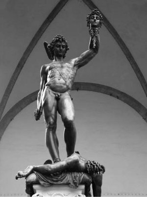

Perseus, Medusa'nın kesik başını tutarken
Kral Polidektes, gene bir gece sevgilisinin oğlu Perseus'u nasıl ortadan kaldırsam diye uykusuzluktan yatağında dört dönerken, yönettiği ülkenin yakınlarındaki bir adada yaşayan ve "Gorgo'lar" denen korkunç canavarlar geliverdi aklına! Sayıları üç olan bu canavarların en ünlüsü Medusa'ydı; kimseler yaklaşamazdı ona!.. Üstelik onun yüzünü gören bile zaten taş kesilirdi hemen!
Kral ertesi sabah Perseus'u yanına çağırdı. Ona gençliği ve gücü konusunda övgüler yağdırdı... Sonra da söz konusu Gorgo canavarlarından söz açtı. "Düğün armağanı olarak birinin bana Medusa'nın kesik başını sunmasını çok isterdim!" dedi. Perseus; gençliğine ve zekâsına güvendiğinden kralın bu dileğini yerine getireceği sözünü verdi... Sonra da saraydan ayrıldı.
Böylece Perseus'tan kurtulan kral da güzel Danae'yle yaşamını birleştirecek hazırlıklara başladı hemen... Perseus da, kendisinden böyle bir istekte bulunan kralın art niyetini sezinlemiyor değildi: Kral, kendisini canavar Medusa yoluyla yok ettirecek, sonra da rahat rahat anası Danae'yi sarayındaki haremine köle olarak kapatacaktı!.. Bu yüzden Perseus, bu kez öldürücü Medusa'yı krala karşı kendisi kullanmak istedi. Ve yollara düştü... Ege adalarında, bütün Akdeniz coğrafyasında sorup soruşturdu Medusa'nın yerini... Ama hiçbir doyurucu bilgiye ulaşamadı...
Ne var ki tanrı Hermes'le tanrıça Atena da, Olimpos Tanrılar Ülkesi'nden bir süredir yakından izliyorlardı Perseus'u... O yorgun ve umarsız haline acıyıp ona hemen yardım etmek istediler. Üstelik bu ölümlü Perseus'un anası güzel Danae; bir zamanlar tanrıların babası Zeus'un son gözağrılarından biriydi...
Ülke ülke Medusa'nın izini süren Perseus'un karşısına çok yakışıklı bir delikanlı çıktı bir gün: Ayaklarında kanatlı altın sandallar, elinde kanatlı bir asa vardı. Başında da gene kanatlı bir başlık... Perseus; tanımadığı bu delikanlının giysisine ve üstündeki simgelere yakından bakınca, onun tanrı Hermes olduğunu anlayıverdi hemen! "Bak delikanlı," diye söze başladı tanrı Hermes. "Seni bir süredir izliyorum. Hep o üç Gorgoları arıyorsun... Onlardan ölümlü olan Medusa'yı öldürmek istiyorsun. Ama önce sen Kuzey Nümfaları denen perikızlarını bul. Medusa'yı öldürebilmen için bu güzel kızların sana üç şey vermesi gerekiyor: seni görünmez kılacak bir başlık, kanatlı sandallar ve büyülü bir çanta..." Perseus'a gerekli olacak daha birçok ek bilgiler de verdi tanrı Hermes. Sonra Kuzey Nümfaları'nın yerini bilen yaşlı ve tek gözlü üç büyücülerin yerini de söyledi... Bununla da yetinmedi tanrı: Gorgo Medusa'nın başını uçurabileceği özel bir kılıç da armağan etti ona...
Akdenizli halklara zeytin ağacını armağan eden tanrıça Atena; Olimpos'taki sarayının penceresinden tanrı Hermes'in Perseus'la konuştuğunu görünce, hemen giyinip kuşandı. Zeytinyağlı kremler, kokular süründü. Sonra da kalkanını kaptığı gibi sarayının penceresinden atladı ve yıldızları okşaya okşaya, usulca süzülerekten Perseus'la Hermes'in yanına indi. Tanrı Hermes, bir anda bütün Akdeniz'i saran zeytin kokusundan tanrıça Atena'nın geldiğini anladı. Zaten Atena da; "Bak, bu delikanlıya ben de bir kalkan vereceğim!" diye hemen söze başladı ve Perseus'a kalkanını uzatıp; "Gorgo Medusa'ya çıplak gözlerle bakarsan hemen taş kesilirsin! Ama bu kalkan, tıpkı ayna gibi karşıdakinin görüntüsünü yansıtır. Bu kalkana bakaraktan Medusa'ya yaklaşır, başını uçurursun!.." diye öğüt verdi. Bu sözlerden sonra iki tanrı birden havalanıp gökyüzünün derinliklerindeki Tanrılar Ülkesi Olimpos'a doğru süzülüp gittiler...
Tanrı Hermes'in verdiği bilgilerle; Kuzey Nümfaları'nın yaşadığı ülkeyi de, onların evlerini de kolayca buldu Perseus. Ve de bu güzel perikızları Nümfalar, çok büyük bir sevecenlikle buyur ettiler onu evlerine... Yemekler, içecekler hazırladılar. Tanrı Diyonisos'un son uğradığında armağan olarak getirdiği şaraptan da sundular ona... Geceler boyu ezgiler söyleyip oyunlar oynadılar. Daha sonra bu güzel Nümfalar, Gorgo Medusa'yı ele geçirmek için ne gerekliyse verdiler Perseus'a: sandalları, başlığı, torbayı... Artık Nümfaların sunduğu bu sandalları giyince uçabiliyor, başlığı takınca görünmez oluyordu! Verdikleri büyülü çanta da, içine koyduğu nesneye göre şekil alıyordu...
Nümfaların evinden ayrıldıktan sonra tanrı Hermes yeniden geldi Perseus'un yanına. "Gördün mü, Perseus," dedi. "İşte alacaklarını aldın! Gel, şimdi de seni Gorgo Medusa'nın yanına götüreyim..." Gorgoların yanına vardıklarında Perseus'un talihi gene güldü yüzüne. Çünkü canavarların üçü de uyuyordu!.. Tanrı Hermes, ölümlü Medusa'yı gösterdi Perseus'a. Çünkü diğer iki Gorgo ölümsüzdü; haliyle onları öldüremezdi... Bu yüzden Perseus hep kalkanına bakaraktan Medusa'ya yaklaştı ve kılıcıyla da kafasını uçurdu. Sonra da Nümfaların verdiği büyülü torbaya, Medusa'nın kesik başını koydu... Tabii taş kesilmemek için hiç bakmadı bu kesik başa...
Ayağındaki uçan sandalların yardımıyla uça uça, birkaç ülkeye daha uğradı Perseus. En sonunda babalığı balıkçı yaşlı Diktis'le anası Danae'nin oturdukları eve geldi: Evde kimseler yoktu! Balıkçı ağları bile yerlerde sürünüyordu!.. Çevrede oturanlar arasında yaptığı kısa bir soruşturma sonunda olup bitenleri öğrendi. Anası Danae, kral Polidektes'in evlenme önerisini geri çevirmişti! Bunun üzerine kral, anasının ve Diktis'in öldürülmesi buyruğunu vermişti! O yüzden onlar da Baştanrı Zeus'un yardımıyla gizli bir tapınağa sığınmışlardı...
Bu ön bilgileri aldıktan sonra Perseus, doğruca kral Polidektes'in sarayına gitti. Sarayda ülkenin ileri gelen egemenleriyle birlikte kral, bir bayramı büyük bir şölenle şen şakrak kutlamaktaydı. Persus istediğinde kendini görünmez kılan başlığıyla aniden girdi salona. Bir anda kral dahil herkes ona doğru çevirdiler bakışlarını... Perseus da çantasındaki Medusa'nın kesik başını çıkarıp onlara doğru tuttu: Salondaki herkes birden taş kesildi!.. En başta kral Polidektes olmak üzere!..
Perseus anası Danae'yi, Baştanrı Zeus'un tapınağında buldu. Sonra da onu alıp doğruca Argos'a, büyükbabası kral Akrisyos'un ülkesine götürdü... Ne var ki kral artık yerinde değildi... Halk bir punduna getirip onu sürgüne göndermişti... Argoslular, büyükbabasından boşalan tahta iyi yürekli Perseus'un geçmesini istediler. Ama o bu öneriyi kabul etmedi... Çünkü krallıkta filan gözü yoktu onun... O, sıradan biri olarak halkının arasına karışmak istiyordu... Halktan biri olarak, yurttaşlarına kan ağlatan bütün kral ve çevresindekilerin gerçek yüzünü herkese göstermek istiyordu. Onların saçtığı kötülüklerle savaşımı seçmişti bu son yaşadıklarından sonra... O yüzden de kendisine bakanları taşa dönüştüren ve artık gerekli görmediği Medusa'nın kesik başını götürüp tanrıça Atena'ya verdi...
Atena da onu, babası Baştanrı Zeus'un bir zamanlar kendisine armağan ettiği Aygis (Aigis) adlı keçi derisinden yapılma o ünlü kalkanının üstüne taktı...
Tanrıça Atena bu kalkanı artık hiç kullanmaz oldu... Çünkü savaş yerine kadınlara kumaş dokumasını, örgü örmesini öğreten ve onları koruyan bir tanrıçaya dönüştü.